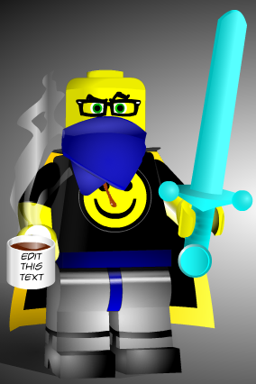

Hew Underrock
Digs holes and kills things

A short fat Dwarven fighter/cleric wearing some PPE
Hew Underrock was last seen in a cave where a giant poisonous spider had set up its lair. It is said that Hew
fought
with the ferocity of a cornered rat but was finally overcome. His heroic stance on PPE vs. Armor will be
celebrated as
one of the greatest folleys of the Covid Age.
Maybe if he is resurrected he will wear both protective items as advised by his crew.